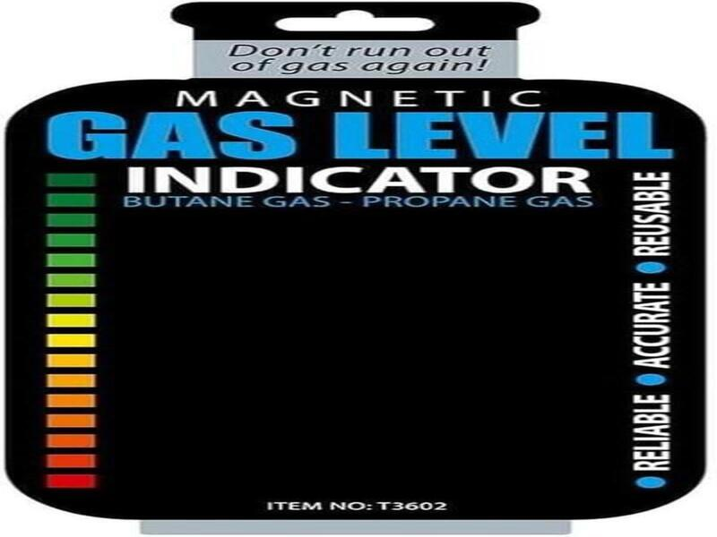
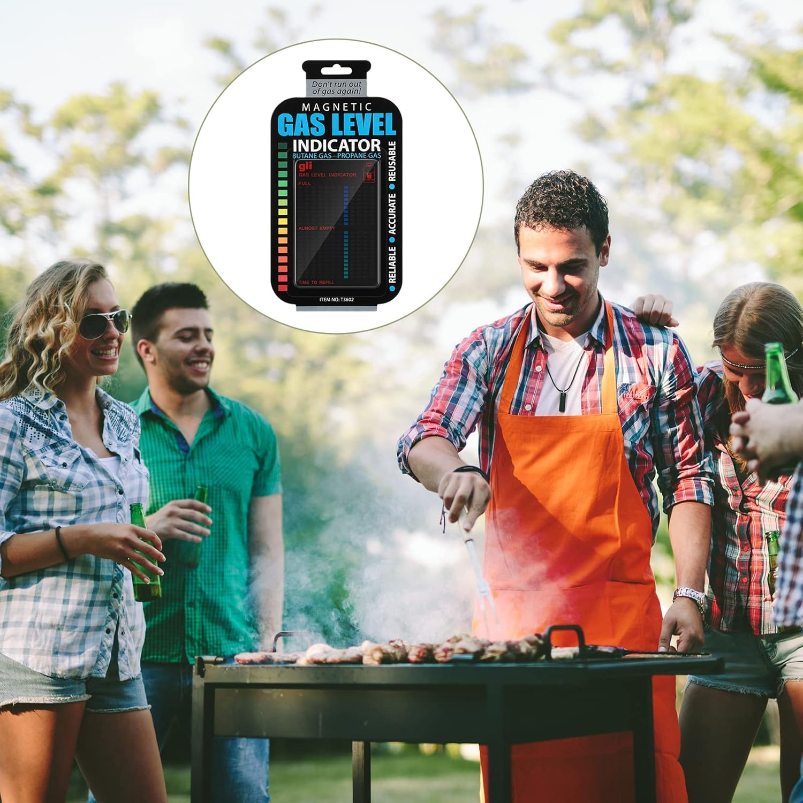
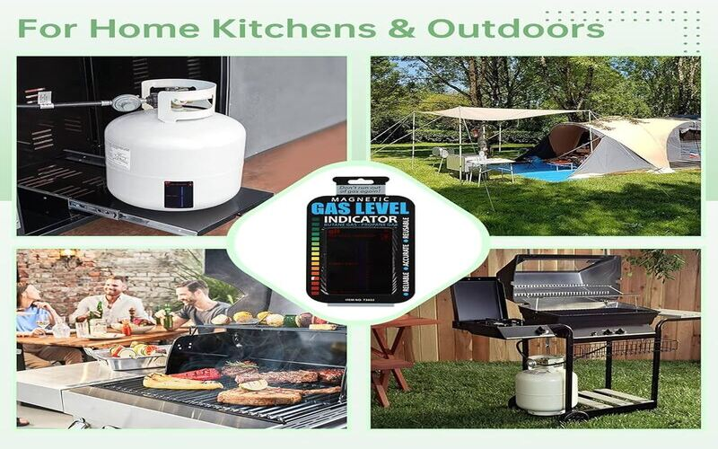

Never run out of gas during load shedding, family braais, or everyday cooking. This reusable magnetic gas level indicator helps you check your gas levels at a glance — so you'll always know when to refill.

Simply attach the magnetic strip to your gas cylinder. As gas level drops, heat-sensitive bars change color. No batteries, no complicated setup — just quick, reliable readings.

Choose your preferred platform:
As an affiliate, I may earn from qualifying purchases. This does not affect your price.
"I never worry about running out of gas during load shedding anymore. Simple and works perfectly!" – Thabo, Johannesburg
"Perfect for our weekend braais. Should be in every South African kitchen!" – Lerato, Cape Town
"So much better than shaking the cylinder to guess how much is left." – Mandla, Durban